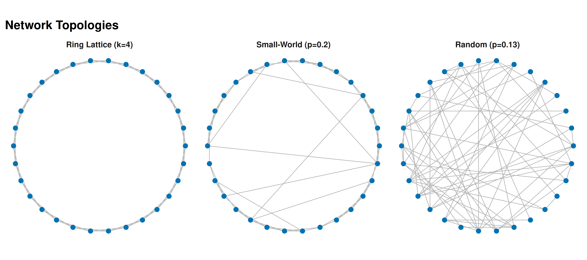
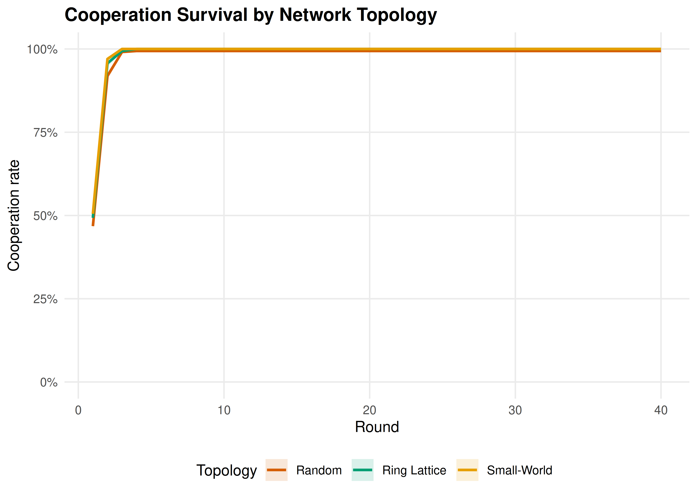

22 Games on Networks
Strategic interaction on graph structures: adjacency-matrix representations, network generation, best-response dynamics, and cooperation on small-world networks — all implemented without igraph.
Learning objectives
- Represent networks as adjacency matrices and compute basic graph statistics in base R.
- Generate random, ring-lattice, and small-world networks from scratch.
- Implement game play and best-response dynamics on networks.
- Compare cooperation outcomes across network topologies in the Prisoner’s Dilemma.
22.1 Motivation
Standard game theory assumes every player interacts with every other — the “well-mixed” population model. But real strategic interactions have structure: firms compete with geographic neighbors, social norms spread through friendship networks, and pathogens transmit along contact networks.
Nowak & May (1992) showed that spatial structure can sustain cooperation in the Prisoner’s Dilemma even when defection dominates in the well-mixed case. Clusters of cooperators protect each other from exploitation. In this chapter, we build the tools to study these effects — representing networks as adjacency matrices, generating classic topologies, and running game dynamics on them.
22.2 Theory
22.2.1 Networks as adjacency matrices
A network (graph) with \(n\) nodes is represented by an \(n \times n\) adjacency matrix \(\mathbf{G}\), where \(G_{ij} = 1\) if nodes \(i\) and \(j\) are connected, and \(G_{ij} = 0\) otherwise. For undirected networks, \(\mathbf{G}\) is symmetric. The degree of node \(i\) is \(k_i = \sum_j G_{ij}\).
Key structural properties include the clustering coefficient (fraction of a node’s neighbors also connected to each other), the average path length (mean shortest path between node pairs), and the degree distribution.
22.2.2 Games on networks
Each node holds a strategy \(s_i \in \{C, D\}\). In each round, every node plays a one-shot game against each of its neighbors. Node \(i\)’s total payoff is:
\[\pi_i = \sum_{j : G_{ij} = 1} u(s_i, s_j)\]
Under best-response dynamics, each node updates its strategy to the one that would maximize its payoff given its neighbors’ current strategies. Under imitation dynamics, each node copies the strategy of its highest-earning neighbor (including itself).
22.2.3 Small-world networks
Watts & Strogatz (1998) showed that many real networks sit between regular lattices (high clustering, long paths) and random graphs (low clustering, short paths). Starting from a ring lattice, randomly rewiring each edge with probability \(p\) produces a small-world network — high clustering but short path lengths.
22.3 Implementation in R
22.3.1 Network generators
# Erdős-Rényi random network
generate_er <- function(n, prob) {
G <- matrix(0L, nrow = n, ncol = n)
for (i in 1:(n - 1)) {
for (j in (i + 1):n) {
if (runif(1) < prob) {
G[i, j] <- 1L
G[j, i] <- 1L
}
}
}
G
}
# Ring lattice: each node connects to k/2 nearest neighbors on each side
generate_ring_lattice <- function(n, k) {
G <- matrix(0L, nrow = n, ncol = n)
half_k <- k %/% 2
for (i in seq_len(n)) {
for (d in seq_len(half_k)) {
j <- ((i - 1 + d) %% n) + 1
G[i, j] <- 1L
G[j, i] <- 1L
}
}
G
}
# Watts-Strogatz small-world: start with ring lattice, rewire with probability p
generate_small_world <- function(n, k, p) {
G <- generate_ring_lattice(n, k)
half_k <- k %/% 2
for (i in seq_len(n)) {
for (d in seq_len(half_k)) {
j <- ((i - 1 + d) %% n) + 1
if (G[i, j] == 1L && runif(1) < p) {
G[i, j] <- 0L
G[j, i] <- 0L
# Rewire to a random non-neighbor (not self)
candidates <- which(G[i, ] == 0L)
candidates <- setdiff(candidates, i)
if (length(candidates) > 0) {
new_j <- sample(candidates, 1)
G[i, new_j] <- 1L
G[new_j, i] <- 1L
}
}
}
}
G
}22.3.2 Network statistics
network_degree <- function(G) rowSums(G)
clustering_coefficient <- function(G) {
n <- nrow(G)
cc <- numeric(n)
for (i in seq_len(n)) {
neighbors <- which(G[i, ] == 1L)
ki <- length(neighbors)
if (ki < 2) { cc[i] <- 0; next }
# Count edges among neighbors
edges_among <- sum(G[neighbors, neighbors]) / 2
cc[i] <- edges_among / (ki * (ki - 1) / 2)
}
cc
}
avg_path_length <- function(G) {
n <- nrow(G)
dist_mat <- matrix(Inf, n, n); diag(dist_mat) <- 0
for (s in seq_len(n)) {
visited <- logical(n); visited[s] <- TRUE; queue <- s; d <- 0
while (length(queue) > 0) {
next_q <- integer(0); d <- d + 1
for (nd in queue) {
nbs <- which(G[nd, ] == 1L & !visited)
if (length(nbs) > 0) {
dist_mat[s, nbs] <- d; visited[nbs] <- TRUE
next_q <- c(next_q, nbs)
}
}
queue <- next_q
}
}
fd <- dist_mat[upper.tri(dist_mat)]
fd <- fd[is.finite(fd)]
if (length(fd) == 0) Inf else mean(fd)
}22.3.3 Circular layout and network visualization
We compute node positions on a circle and draw edges as segments using ggplot2.
circular_layout <- function(n) {
angles <- seq(0, 2 * pi, length.out = n + 1)[-(n + 1)]
tibble(node = seq_len(n), x = cos(angles), y = sin(angles))
}
set.seed(42)
n_nodes <- 30
G_ring <- generate_ring_lattice(n_nodes, k = 4)
G_sw <- generate_small_world(n_nodes, k = 4, p = 0.2)
G_er <- generate_er(n_nodes, prob = 0.13)
layout <- circular_layout(n_nodes)
# Build combined edge and node data for faceted plot
make_network_df <- function(G, layout_df, topo_label) {
edges <- which(G == 1L & upper.tri(G), arr.ind = TRUE)
edge_df <- tibble(
x = layout_df$x[edges[, 1]], y = layout_df$y[edges[, 1]],
xend = layout_df$x[edges[, 2]], yend = layout_df$y[edges[, 2]],
topology = topo_label
)
node_df <- layout_df |> mutate(topology = topo_label)
list(edges = edge_df, nodes = node_df)
}
nets <- list(
make_network_df(G_ring, layout, "Ring Lattice (k=4)"),
make_network_df(G_sw, layout, "Small-World (p=0.2)"),
make_network_df(G_er, layout, "Random (p=0.13)")
)
all_edges <- bind_rows(lapply(nets, \(x) x$edges))
all_nodes <- bind_rows(lapply(nets, \(x) x$nodes))
topo_levels <- c("Ring Lattice (k=4)", "Small-World (p=0.2)", "Random (p=0.13)")
all_edges$topology <- factor(all_edges$topology, levels = topo_levels)
all_nodes$topology <- factor(all_nodes$topology, levels = topo_levels)
p_networks <- ggplot() +
geom_segment(data = all_edges,
aes(x = x, y = y, xend = xend, yend = yend),
colour = "grey70", linewidth = 0.3) +
geom_point(data = all_nodes, aes(x = x, y = y),
colour = okabe_ito[5], size = 2) +
facet_wrap(~ topology, ncol = 3) +
coord_fixed() +
theme_publication() +
theme(axis.text = element_blank(),
axis.ticks = element_blank(),
axis.title = element_blank(),
panel.grid = element_blank(),
strip.text = element_text(face = "bold")) +
labs(title = "Network Topologies")
p_networks
Figure 22.1: Three network topologies with 30 nodes. Left: ring lattice (k = 4) with high clustering but long paths. Centre: Watts-Strogatz small-world (k = 4, p = 0.2) with high clustering and short paths. Right: Erdős-Rényi random network (p = 0.13) with low clustering and short paths.
save_pub_fig(p_networks, "network-topologies", width = 9, height = 4)22.3.4 Prisoner’s Dilemma on networks
pd_payoff <- function(s_i, s_j, R = 3, S = 0, T_val = 5, P = 1) {
payoffs <- matrix(c(R, S, T_val, P), 2, 2,
dimnames = list(c("C","D"), c("C","D")))
payoffs[s_i, s_j]
}
# Imitation dynamics: copy highest-earning neighbor (or self)
run_network_pd <- function(G, n_rounds = 50, init_coop_frac = 0.5) {
n <- nrow(G)
strategies <- sample(c("C", "D"), n, replace = TRUE,
prob = c(init_coop_frac, 1 - init_coop_frac))
coop_history <- numeric(n_rounds)
for (t in seq_len(n_rounds)) {
payoffs <- numeric(n)
for (i in seq_len(n)) {
nbs <- which(G[i, ] == 1L)
for (j in nbs) payoffs[i] <- payoffs[i] + pd_payoff(strategies[i], strategies[j])
}
coop_history[t] <- mean(strategies == "C")
new_s <- strategies
for (i in seq_len(n)) {
pool <- c(i, which(G[i, ] == 1L))
new_s[i] <- strategies[pool[which.max(payoffs[pool])]]
}
strategies <- new_s
}
coop_history
}22.3.5 Comparing cooperation across topologies
set.seed(123)
n_nodes <- 50
n_rounds <- 40
n_reps <- 20
topologies <- list(
"Ring Lattice" = function() generate_ring_lattice(n_nodes, k = 4),
"Small-World" = function() generate_small_world(n_nodes, k = 4, p = 0.2),
"Random" = function() generate_er(n_nodes, prob = 4 / (n_nodes - 1))
)
all_results <- list()
for (topo_name in names(topologies)) {
for (rep in seq_len(n_reps)) {
G <- topologies[[topo_name]]()
coop <- run_network_pd(G, n_rounds = n_rounds, init_coop_frac = 0.5)
all_results[[length(all_results) + 1]] <- tibble(
round = seq_len(n_rounds),
cooperation = coop,
topology = topo_name,
replicate = rep
)
}
}
results_df <- bind_rows(all_results)
avg_results <- results_df |>
group_by(topology, round) |>
summarise(
mean_coop = mean(cooperation),
se_coop = sd(cooperation) / sqrt(n()),
.groups = "drop"
)
topo_cols <- c("Ring Lattice" = okabe_ito[3],
"Small-World" = okabe_ito[1],
"Random" = okabe_ito[6])
p_coop <- ggplot(avg_results, aes(x = round, y = mean_coop, colour = topology)) +
geom_ribbon(aes(ymin = mean_coop - se_coop, ymax = mean_coop + se_coop,
fill = topology), alpha = 0.15, colour = NA) +
geom_line(linewidth = 0.9) +
scale_colour_manual(values = topo_cols, name = "Topology") +
scale_fill_manual(values = topo_cols, name = "Topology") +
scale_y_continuous(labels = scales::percent_format(), limits = c(0, 1)) +
theme_publication() +
labs(title = "Cooperation Survival by Network Topology",
x = "Round", y = "Cooperation rate")
p_coop
Figure 22.2: Cooperation rates over time in the PD across three topologies (50 nodes, 20 replications). The ring lattice sustains cooperation through protective clusters; the random network loses it fastest.
save_pub_fig(p_coop, "network-cooperation", width = 7, height = 5)22.4 Worked example
We compare network structure and cooperation outcomes across the three topologies with 50 nodes.
set.seed(42)
G_sw_ex <- generate_small_world(50, k = 4, p = 0.2)
G_er_ex <- generate_er(50, prob = 4 / 49)
G_ring_ex <- generate_ring_lattice(50, k = 4)
stats <- tibble(
Topology = c("Ring Lattice", "Small-World", "Random"),
`Mean degree` = c(mean(network_degree(G_ring_ex)),
mean(network_degree(G_sw_ex)),
mean(network_degree(G_er_ex))),
`Clustering` = c(mean(clustering_coefficient(G_ring_ex)),
mean(clustering_coefficient(G_sw_ex)),
mean(clustering_coefficient(G_er_ex))),
`Avg. path length` = c(avg_path_length(G_ring_ex),
avg_path_length(G_sw_ex),
avg_path_length(G_er_ex))
)
cat("Network statistics:\n\n")#> Network statistics:
print(stats, n = 3)#> # A tibble: 3 × 4
#> Topology `Mean degree` Clustering `Avg. path length`
#> <chr> <dbl> <dbl> <dbl>
#> 1 Ring Lattice 4 0.5 6.63
#> 2 Small-World 4 0.335 3.52
#> 3 Random 4.52 0.101 2.64
# Final cooperation rates from the simulation above
final_coop <- avg_results |>
filter(round == n_rounds) |>
select(topology, mean_coop)
cat("\nFinal cooperation rates (round 40, averaged over 20 replications):\n\n")#>
#> Final cooperation rates (round 40, averaged over 20 replications):
for (i in seq_len(nrow(final_coop))) {
cat(sprintf(" %-15s %.1f%%\n", final_coop$topology[i],
final_coop$mean_coop[i] * 100))
}#> Random 99.4%
#> Ring Lattice 100.0%
#> Small-World 100.0%The small-world network achieves short path lengths (like the random graph) while preserving high clustering (like the ring lattice). Cooperator clusters are locally reinforced by high clustering but can also spread through rewired long-range connections.
22.5 Extensions
- Scale-free networks: Santos & Pacheco (2005) showed that cooperation thrives on networks with power-law degree distributions, where highly connected hubs act as cooperation amplifiers.
- Coevolution: When agents can rewire connections — dropping links to defectors, forming links with cooperators — the network and strategies evolve together, dramatically increasing cooperation.
- Multiplayer games: Public goods games on networks replace pairwise PD; the critical synergy factor for cooperation depends on the degree distribution.
- Spatial PD: The lattice-based spatial PD (19) is a special case where the adjacency matrix encodes a regular grid.
Exercises
Degree distribution. Generate an Erdős-Rényi network with \(n = 200\) and \(p = 0.05\). Plot the degree distribution as a histogram and overlay the theoretical Binomial(\(n-1\), \(p\)) pmf. How well does theory match?
Rewiring sweep. For a Watts-Strogatz network with \(n = 50\) and \(k = 6\), vary \(p\) from 0 to 1 in 20 steps. Plot the mean clustering coefficient and average path length (10 replications each) to reproduce the classic small-world transition figure.
Best-response vs imitation. Implement best-response dynamics (each node switches to the payoff-maximizing strategy given current neighbors). Compare cooperation trajectories with imitation dynamics on the same small-world network over 50 rounds.
Solutions appear in D.